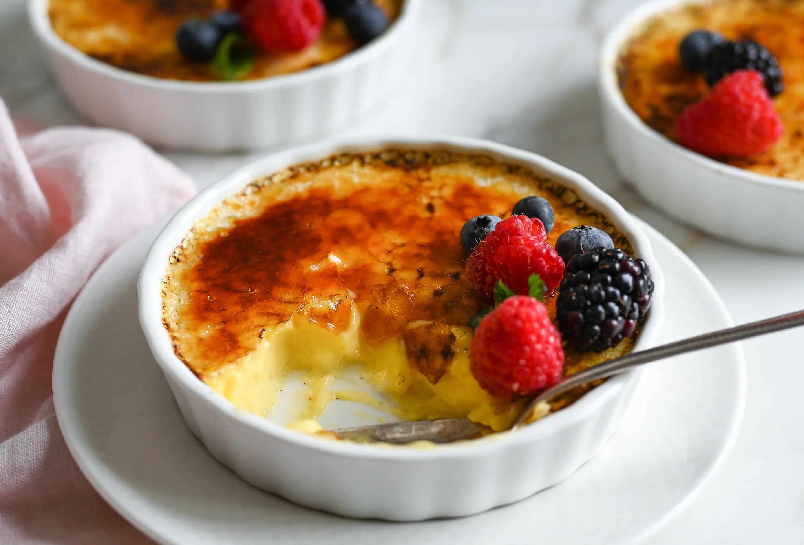

مواد لازم:
- زرده تخم مرغ: ۶ عدد
- شکر سفید: ۶ قاشق غذاخوری
- عصاره وانیل: ½ قاشق چایخوری
- خامه سنگین یا پرچرب: ۲ و ½ فنجان (هر فنجان خامه ۲۳۵ گرم است)
- شکر قهوهای: ۲ قاشق غذاخوری
طرز تهیه:
مرحله اول
برای درست کردن دسر فرانسوی کرم بروله وانیلی در فر ابتدا فر را روی دمای ۳۰۰ درجه فارنهایت یا ۱۵۰ درجه سانتیگراد تنظیم و روشن کنید تا گرم شود. در یک ظرف مناسب زردههای تخم مرغ، ۶ قاشق غذاخوری شکر سفید و عصاره وانیل را با هم مخلوط کنید تا یک مایه کرمی و ضخیم و یکدست درست شود.
مرحله دوم
خامه را در یک قابلمه کوچک بریزید و روی حرارت ملایم گاز بگذارید و مرتب هم بزنید تا تقریبا به دمای جوش برسد. بعد از اینکه خامه به دمای جوش رسید بلافاصله آن را از روی حرارت بردارید. حالا ترکیب تخم مرغ و شکر و عصاره وانیل را به خامه گرم اضافه کنید. تمام مواد را با هم میکس کنید تا یکدست شوند.
مرحله سوم
اگر میخواهید کرم بروله وانیلی را در فر درست کنید ظرفهای رمکین را داخل فر بگذارید و روی آنها یک لایه نازک شکر قهوهای بپاشید. برای درست کردن کرم بروله باید ظرف سفالی یا همان کاسههای مشهور «رمکین» را داشته باشید که در گرمای فر و یا داخل آب جوش بسیار مقاوم و نشکن هستند. بهتر است در طبق پایین فر یک ظرف آب بگذارید تا فر رطوبت کافی داشته باشد و دسر خشک نشود.
رمکینها را در طبقه بالای فر بگذارید تا شکر کمی آب شود (۲ الی سه دقیقه کافی است). سپس رمکینها را از فر خارج کنید و اجازه دهید در دمای محیط سرد شوند. بعد از سرد شدن در دمای محیط آنها را در یخچال بگذارید تا خودشان را بگیرند و سپس با میوه مورد علاقه یا چای و قهوه سرو کنید.
